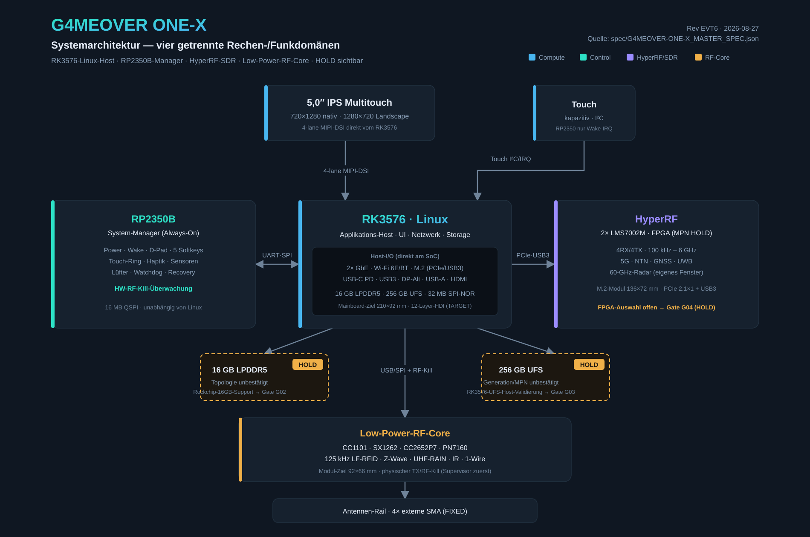
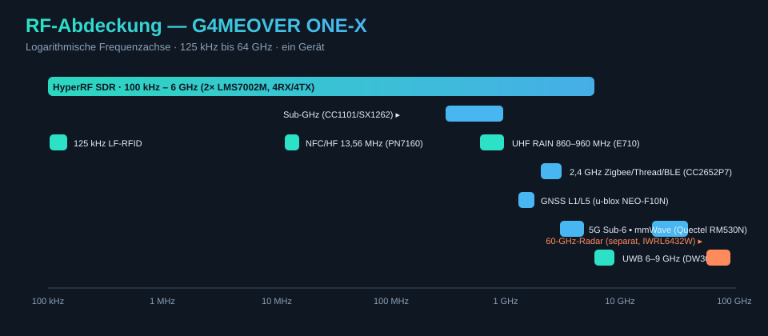
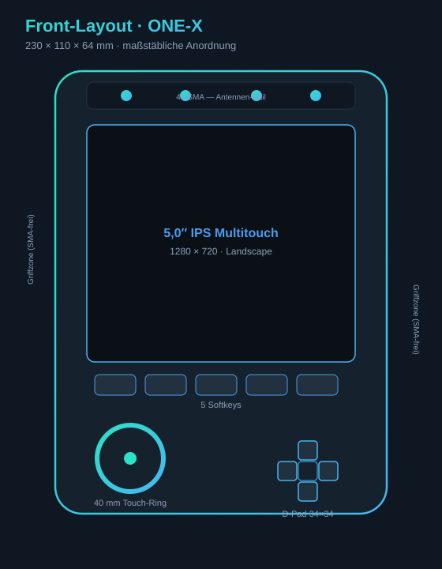

Der Overkill-Linux-Handheld für Research, Pentest und Funktechnologie. Ein Gerät für absolut alles — von 125 kHz LF-RFID bis 6 GHz SDR, von Zigbee bis 5G-Satellit.
Vergleichbare Fähigkeiten erfordern derzeit Flipper Zero + HackRF/LimeSDR + Laptop + Modem/GNSS. ONE-X bündelt ein 5″-Touch-Linux, ein kohärentes 4RX/4TX-SDR bis 6 GHz, den vollen kurzreichweitigen RF-Zoo, 5G+Satellit, GNSS-raw, UWB und 60-GHz-Radar in einem einzigen, feldtauglichen System. Als integriertes Gerät existiert dafür heute kein Äquivalent.
Der angekündigte Flipper One (RK3576, ~350 $) ist bewusst klein. ONE-X teilt nur die SoC-Klasse und spielt eine Kategorie darüber.
| Merkmal | G4MEOVER ONE-X | Flipper One | Flipper Zero |
|---|---|---|---|
| Display | 5,0″ Multitouch 1280×720 | 2,4″ 256×144 | 1,3″ mono |
| RAM | 16 GB LPDDR5 | 8 GB | 256 KB |
| SDR | 2× LMS7002M · 100 kHz–6 GHz | — | — |
| Mobilfunk | 5G Sub-6 + mmWave + NTN-Satellit | — | — |
| GNSS | u-blox L1/L5 raw + PPS | — | — |
| UWB / Radar | DW3000 + 60-GHz-FMCW | — | — |
| Netzwerk | 2× GbE · Wi-Fi 6E · USB3 · HDMI | 2× GbE · Wi-Fi 6E | — |
| Akku | 4× 21700 · ~72 Wh | intern | 2000 mAh |
Flipper-One-Werte aus öffentlicher Ankündigung (Mai 2026), können sich bis Launch ändern. Der Vergleich dient der technischen Einordnung.
Die Trennung ist Absicht: getrennte EVT-Iteration, EMI-Partitionierung und getrennte Zertifizierung. Ein Always-On-RP2350B bleibt verfügbar, selbst wenn Linux hängt.



Offene Herstellerdaten werden nicht erfunden, sondern als HOLD geführt und in der richtigen Reihenfolge geschlossen.
Diese Anbieter werden angeschrieben. Noch besteht keine Zusage oder Partnerschaft — die Namen ordnen lediglich die geplanten Anfragen zu.
Betreibt ein öffentliches Open-Source-/Sponsoring-Programm — Anfrage vorbereitet.
Möglicher One-Stop-JDM/ODM-Partner, CN+VN, seit 2003, NDA-ready.